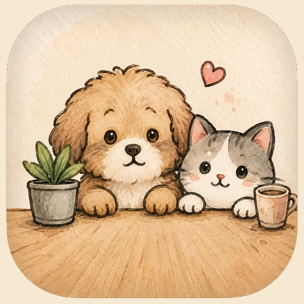

01
生成宠物档案Create a Pet Profile
上传照片、选择风格和动作，生成属于你的 DeskPaw。Upload a photo, choose a style and actions, then create your DeskPaw.
宠物照片生成桌面陪伴小宠 Pet photo to desktop-style companion
把宠物照片生成一个可安装到手机桌面的陪伴小宠。它会陪你专注、提醒喝水、给你鼓励，还能生成漂亮的分享卡片。 Turn a pet photo into an installable mobile companion. It can help you focus, remind you to drink water, encourage you, and create share cards.

上传照片、选择风格和动作，生成属于你的 DeskPaw。Upload a photo, choose a style and actions, then create your DeskPaw.
专注计时、喝水提醒、互动记录，让它真的陪你用起来。Use focus timers, water reminders, and interaction logs in the pet home.
生成适合分享的卡片，把今日陪伴感保存下来。Create a shareable card and save today's companion moment.
用手机扫码打开 DeskPaw。进入网页后，在 Safari 或 Chrome 里选择“添加到主屏幕”，就可以像 App 一样打开。 Scan with your phone to open DeskPaw. In Safari or Chrome, choose Add to Home Screen to install it like an app.